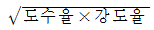
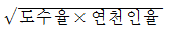
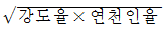
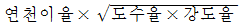
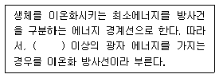
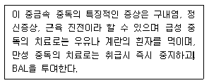
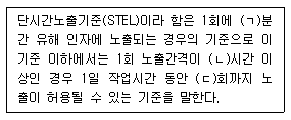

산업위생관리기사 (2013-03-10 기출문제)
1과목: 산업위생학개론
1. 톨루엔(TLV=50 ppm)을 사용하는 작업장의 작업시간이 10시간일 때 허용기준을 보정하여야 한다. OSHA 보정법과 Bried and Scala 보정법을 적용하였을 경우 보정 보정된 허용기준치 간의 차이는 얼마인가?
- 1ppm
- 2.5ppm
- 5ppm
- 10 ppm
(정답률: 79%)

2. 다음 중 근골격계질환의 위험요인에 대한 설명으로 적절하지 않은 것은?
- 큰 변화가 없는 반복동작일수록 근골격계질환의 발생 위험이 증가한다.
- 정적작업보다 종적작업에서 근골격계질환의 발생 위험이 더 크다.
- 작업공정에 장애물이 있으면 근골격계질환의 발생 위험이 더 커진다.
- 21℃ 이하의 저온작업장에서 근골격계질환의 발생 위험이 더 커진다.
(정답률: 76%)
3. 재해통계지수 중 종합재해지수를 올바르게 나타낸 것은?




(정답률: 82%)
4. 육체적작업능력(PWC)이 16kcal/min인 근로자가 1일 8시간동안 물체를 운반하고 있다. 이때의 작업 대사량은 8kcal/min이고, 휴식시의 대사량은 1.5kcal/min이다. 이 사람이 쉬지 않고 계속하여 일할 수 있는 최대 허용 시간은? (단, log Tend=b0+b1 ㆍ E, b0=3.720, b1=-0.1949)
- 145분
- 185분
- 245분
- 285분
(정답률: 66%)
5. 다음 중 재해성 질병의 인정시 종합적으로 판단하는 사항으로 틀린 것은?
- 재해의 성질과 강도
- 재해가 작용한 신체부위
- 재해가 발생할 때까지의 시간적 관계
- 작업내용과 그 작업에 종사한 기간 또는 유해 작업의 정도
(정답률: 38%)
6. 다음 중 개정된 NIOSH의 권고중량한계(Recommended Weight Limit, RWL)에서 모든 조건이 가장 좋지 않을 경우 허용되는 최대 중량은?
- 15kg
- 23kg
- 32kg
- 40kg
(정답률: 72%)
7. 다음 중 피로에 관한 내용과 가장 거리가 먼 것은?
- 에너지원의 소모
- 신체 조절 기능의 저하
- 체내에서의 물리ㆍ화학적 변조
- 물질 대사에 의한 노폐물의 체내 소모
(정답률: 80%)
8. 다음 중 육체적 작업능력에 영향을 미치는 요소와 내용을 잘못 연결한 것은?
- 작업 특징 - 동기
- 육체적 조건 - 연령
- 환경 요소 - 온도
- 정신적 요소 - 태도
(정답률: 77%)
9. 1800년대 산업보건에 관한 볍률로서 실제로 효과를 거둔 영국의 공장법의 내용과 거리가 먼 것은?
- 감독관을 임명하여 공장을 감독한다.
- 근로자에게 교육을 시키도록 의무화한다.
- 18세 미만 근로자의 야간작업을 금지한다.
- 작업할 수 있는 연령을 8세 이상으로 제한한다.
(정답률: 86%)
10. 산업안전보건법령에 따라 작업환경 측정방법에 있어 작업른로자수가 100명을 초과하는 경우 최대 시료채취 근로자수는 몇 명으로 조정할 수 있는가?
- 10명
- 15명
- 20명
- 50명
(정답률: 87%)
11. 새로운 건물이나 새로 지은 집에 입주하기 전 실내를 모두 닫고 30℃ 이상으로 5 ~ 6시간 유지시킨 후 1시간 정도 환기를 하는 방식을 여러 번 반복하여 실내의 휘발성유기화합물이나 포름알데히드의 저감 효과를 얻는 방법을 무엇이라 하는가?
- Heating up
- Bake out
- Room Heating
- Burning up
(정답률: 87%)
12. 다음 중 산업위생의 정의와 가장 거리가 먼 것은?
- 사회적 건강 유지 및 증진
- 근로자의 체력 증진 및 진료
- 육체적, 정신적 건강 유지 및 증진
- 생리적, 심리적으로 적합한 작업 환경에 배치
(정답률: 85%)
13. 다음 중 실내 공기오염과 가장 관계가 적은 인체 내의 증상은?
- 광과민증(photosenseitization)
- 빌딩증후군(sick building syndrome)
- 건물관련질병(building related disease)
- 복홥화합물질민감증(multiple chemical sensitivity)
(정답률: 86%)
14. 작업적성검사 중 생리적 기능검사라고 볼 수 없는 것은?
- 감각기능검사
- 체력검사
- 심폐기능검사
- 지각동작검사
(정답률: 68%)
15. 다음 중 직장에서의 피로방지 대책이 아닌 것은?
- 적절한 시기에 작업을 전환하고 교대시킨다.
- 부적합한 환경을 개선하고 쾌적한 환경을 조성한다
- 적절한 근육을 사용하고 특정 부위에 부하가 걸리도록 한다.
- 적절한 근로시간과 연속작업시간을 배분하여 작업을 수행한다.
(정답률: 90%)
16. 다음 중 작업공정에 따라 발생 가능성이 가장 높은 직업성 질환을 올바르게 연결한 것은?
- 용광로 작업 - 치통, 부비강통, 이(耳)통
- 갱내 착암작업 - 전광성 안염
- 샌드 블래스팅(sand blasting) - 백내장
- 축전지 제조 - 납중독
(정답률: 86%)
17. 산업안전보건법에 따라 작업환경측정을 실시한 경우 작업 환경측정결과보고서는 시료채취를 마친 날부터 며칠 이내에 관할 지방고용노동관서의 장에게 제출하여야 하는가?
- 7일
- 15일
- 30일
- 60일
(정답률: 85%)
18. 산업안전보건법에 따라 사업주가 사업을 할 때 근로자의 건장장해를 예방하기 위하여 필요한 보건상의 조치를 하여야 할 항목과 가장 관련이 적은 것은?
- 폭발성, 발화성 및 인화성 물질 등에 의한 위험 작업의 건강장해
- 계측감시 ㆍ 컴퓨터 단말기 조작 ㆍ 정밀공작 등의 작업에 의한 건강장해
- 단순한반복작업 또는 인체에 과도한 부담을 주는 작업에 의한 건강장해
- 사업장에서 배출되는 기계 ㆍ 액체 또는 찌거기 등에 의한 건강장해
(정답률: 57%)
19. 미국산업위생학술원(AAIH)에서 채택한 산업위생전문가의 윤리강령 중 근로자에 대한 책임과 가장 거리가 먼 것은?
- 근로자의 건강 보호가 산업위생전문가의 1차적인 채임이라는 것을 인식해야 한다.
- 근로자와 기타 여러 사람의 건강과 안녕이 산업위생 전문가의 판단에 좌우된다는 것을 깨달아야 한다.
- 위험요인의 측정, 평가 및 관리에 있어서 외부의 압력에 굴하지 않고 근로자 중심으로 태도를 취한다.
- 위험요소와 예방조치에 대하여 근로자와 상담해야 한다.
(정답률: 73%)
20. 화학물질 및 물리적인자의 노출기준에서 발암성 정보 물질 중 “사람에게 충분한 발암성 증거가 있는 물질”에 대한 표기방법으로 옳은 것은?
- 1
- 1A
- 2A
- 2B
(정답률: 86%)
2과목: 작업위생측정 및 평가
21. 일정한 온도조건에서 부피와 압력은 반비례한다는 표준가스 법칙은?
- 보일의 법칙
- 샤를의 법칙
- 게이-루이삭의 법칙
- 라울트의 법칙
(정답률: 81%)
22. 다음 중 1차 표준기구로만 짝지어진 것은?
- 로타미터, Pitot 튜브, 폐활량계
- 비누거품미터, 가스치환병, 폐활량계
- 건식가스미터, 비누거품미터, 폐활량계
- 비누거품미터, 폐활량계, 열선기류계
(정답률: 81%)
23. “물질을 취급 또는 보관하는 동안에 기체 또는 미생물이 침입하지 않도록 내용물을 보호하는 용기”는 다음 중 어느 것인가? (단, 고용노동부 고시 기준)
- 밀폐용기
- 기밀용기
- 밀봉용기
- 차광용기
(정답률: 59%)
24. 작업장의 소음 측정시 소음계의 청감보정회로는?
- A 특성
- B 특성
- C 특성
- D 특성
(정답률: 86%)
25. 종단속도가 0.632m/hr인 입자가 있다. 이 입자의 직경이 3㎛ 라면 비중은 얼마인가?
- 0.65
- 0.55
- 0.86
- 0.77
(정답률: 58%)
26. 흉곽성 먼지(TPM)의 50%가 침착되는 평균입자의 크기는? (단, ACGIH 기준)
- 0.5 ㎛
- 2 ㎛
- 4 ㎛
- 10 ㎛
(정답률: 88%)
27. 누적소음노출량 측정기로 소음을 측정하는 경우에 기기 설정으로 적절한 것은? (단, 고용노동부 고시 기준)
- Criteria:80dB, Exchange Rate:10dB, Threshold:90dB
- Criteria:90dB, Exchange Rate:10dB, Threshold:80dB
- Criteria:80dB, Exchange Rate:5dB, Threshold:90dB
- Criteria:90dB, Exchange Rate:5dB, Threshold:80dB
(정답률: 86%)
28. 작업환경측정시 유량, 측정시간, 회수율, 분석 등에 의한 오차가 각각 20%, 15%, 10%, 5% 일 때 누적오차는?
- 약 29.5%
- 약 27,4%
- 약 25.8%
- 약 23.3%
(정답률: 81%)
29. 산업위생통계에서 적용하는 변이계수에 대한 설명으로 틀린 것은?
- 동계진단의 측정값들에 대한 균일성, 정밀성 정도를 표현하는 것이다.
- 표준오차에 대한 평균값의 크기를 나타낸 수치이다.
- 단위가 서로 다른 집단이나 특성값의 상호 산포도를 비교하는데 이용될 수 있다.
- 평균값의 크기가 0에 가까울수록 변이계수의 의의가 작아지는 단점이 있다.
(정답률: 52%)
30. 유사노출그룹(HEG)에 관한 내용으로 틀린 것은?
- 시료 채취수를 경제적으로 하는데 목적이 있다.
- 유사노출그룹은 우선 유사한 유해인자별로 구분한 후 유해인자의 동질성을 보다 확보하기 위해 조직을 분석한다.
- 역학조사를 수행할 때 사건이 발생된 근로자가 속한 유사노출그룹의 노출농도를 근서로 노출원인 및 농도를 추정할 수 있다.
- 유사노출그룹은 노출되는 유해인자의 농도와 특성이 유사하거나 동일한 근로자 그룹을 말하며 유해인자의 특성이 동일하다는 것은 노출되는 유해인자가 동일하고 농도가 일정한 변이 내에서 통계적으로 유사하다는 의미이다.
(정답률: 71%)
31. 어떤 작업장에서 오염물질 농도를 측정하였더니 그 중 일산화탄소(CO)가 0.01%였다. 이 때 일산화탄소 농도(mg/m3)는?
- 95mg/m3
- 1⑤mg/m3
- 115mg/m3
- 125mg/m3
(정답률: 54%)
32. 입경범위가 0.1~0.5인 입자성 물질이 여과지에 포집될 경우에 관여하는 주된 메커니즘은?
- 충돌과 간섭
- 확산과 간섭
- 확산과 충돌
- 충돌
(정답률: 73%)
33. 옥내 작업장의 유해가스를 신속히 측정하기 위한 가스 검지관에 관한 내용으로 틀린 것은?
- 민감도가 낮으며 비교적 고농도에만 적용이 가능하다.
- 특이도가 낮다. 측 다른 방해물질의 영향을 받기 쉬워 오차가 크다.
- 측정대상물질의 동정이 되어 있지 않아도 다양한 오염물질의 측정이 가능하다.
- 숙련된 산업위생전문가가 아니더라도 어느 정도만 숙지하면 사용할 수 있다.
(정답률: 82%)
34. 작업환경공기 중의 벤젠농도를 측정하였더니 8mg/m3, 5mg/m3, 7mg/m3, 3ppm, 6mg/m3 이었다. 이들 값의 기하 평균치는(mg/m3)는? (단, 벤젠의 분자량은 78이고. 기온은 25℃ 이다.)
- 약 7.4
- 약 6.9
- 약 5.3
- 약 4.8
(정답률: 71%)
35. 어떤 작업장에서 하이 볼륨 시료채취기(High volume Sampler)를 1.1 /분의 유속에서 1시간 30분간 작동 시킨후, 여과지(filter paper)에 채취된 납 성분을 전처리 과정을 거쳐 산(acid)과 증류수 용액 100mL에 추출 하였다. 이 용액의 7.5mL를 취하여 250mL 용기에 넣고 증류수를 더하여 250mL가 되게 하여 분석한 결과 9.80mg/L 이었다. 작업장 공기 내의 납 농도는 몇 mg/m3인가? (단, 납의 원자량은 207, 100% 추출된다고 가정한다.)
- 0.18
- 0.26
- 0.33
- 0.48
(정답률: 30%)
36. 활성탄관을 이용하여 유기용제 시료를 채취하였다. 분석을 위한 탈착용매로 사용되는 대표적인 물질은?
- 황산
- 사염환탄소
- 중크롬산칼륨
- 이황화탄소
(정답률: 83%)
37. 가스상 물질에 대한 시료채취 방법 중 [순간시료채취 방법을 사용할 수 없는 경우]와 가장 거리가 먼 것은?
- 유해물질의 농도가 시간에 따라 변할 때
- 반응성이 없는 가스상 유해물질일 때
- 시간 가중 평균치를 구하고자 할 때
- 공기 중 유해물질의 농도가 낮을 때
(정답률: 60%)
38. 열, 화학물질, 압력 등에 강한 특성을 가지고 있어 석탄 건류나 증류 등의 고열 공정에서 발생되는 다행방향족 탄화수소를 채취할 때 사용되는 막여과지는?
- PTFE 막여과지
- MCE 막여과지
- 은 막여과지
- 유리섬유 막여과지
(정답률: 84%)
39. 20℃, 1기압에서 에틸렌글리콜의 증기압이 0.1 mmHg 이라면 공기 중 포화농도(ppm)는?
- 약 56
- 약 112
- 약 132
- 약 156
(정답률: 73%)
40. 셀룰로오즈 에스테르 막여과지에 관한 설명으로 틀린 것은?
- 산에 쉽게 용해된다.
- 유해물질이 표면에 주로 침착되어 현미경 분석에 유리하다.
- 흡습성이 적어 중량분석에 주로 적용된다.
- 중금속 시료채취에 유리하다.
(정답률: 72%)
3과목: 작업환경관리대책
41. 메틸메타크릴레이트가 7m×14m×2m의 체적을 가진 방에 저장되어 있으며 공기를 공급하기 전에 측정한 농도는 400ppm 이었다. 이 방으로 환기량을 20m3/min을 공급 한 후 노출기준인 100ppm 으로 달성되는 데 걸리는 시간은?
- 약 13.6분
- 약 18.4분
- 약 23.2분
- 약 27.6분
(정답률: 69%)
42. 작업환경내의 공기를 치환하기 위해 전체 환기법을 사용 할 때의 조건으로 맞지 않는 것은?
- 소량의 오염물질이 일정속도로 작업장으로 배출될 때
- 유해물질의 독성이 작을 때
- 동일 작업장 내에 배출원이 고정성일 때
- 작업공정상 국소배기가 불가능할 때
(정답률: 79%)
43. 작업장에 직경이 5㎛ 이면서 비중이 3.5인 입자와 직경이 6㎛ 이면서 비중이 2.2인 입자가 있다. 작업장의 높이가 6m 일 때 모든 입자가 가라앉는 최소 시간은?
- 약 42분
- 약 72분
- 약 102분
- 약 132분
(정답률: 41%)
44. 여포 제진장치에서 처리할 배기 가스량이 2m3/sec이고 여포의 총면적이 6m2일 때 여과속도는?
- 25 cm/sec
- 28 cm/sec
- 33 cm/sec
- 39 cm/sec
(정답률: 70%)
45. 덕트 직경이 30cm 이고 공기유속이 5 nm/sec일 때 레이놀드수(Re)는? (단, 공기의 점성계수는 20℃, 1.85×10-5kg/sec ㆍ m, 공기밀도 20℃ 1.2kg/m3)
- 97,300
- 117,500
- 124,400
- 135,200
(정답률: 71%)
46. 강제환기의 효과를 제고하기 위한 원칙으로 틀린 것은?
- 요염물질 배출구는 가능한 한 오염원으로부터 가까운 곳에 설치하여 점 환기 현상을 방지한다.
- 공기배출구와 근로자의 작업위치 사이에 오염원이 위치 하여야 한다.
- 공기가 배출되면서 오염장소를 통과하도록 공기배출구와 유립구의 위치를 선정한다.
- 오염원 주위에 다른 작업 공정이 있으면 공기배출량을 공급량보다 약간 크게 하여 음압을 형성하여 주위 그 놀자에게 오염 물질이 확산 되지 않도록 한다.
(정답률: 75%)
47. 공기 중의 사염화탄소 농도가 0.3% 라면 정화통의 사용 가능 시간은? (단, 사염화탄소 0.5%에서 100분간 사용 가능한 정화통 기준)
- 167분
- 181분
- 218분
- 235분
(정답률: 66%)
48. 어떤 작업장에서 메틸알코올(비중 0.792, 분자량 32.04)이 시간당 1.0ℓ 증발되어 공기를 오염시키고 있다. 여유계수 K 값은 3이고, 허용기준 TLV는 200ppm 이라면 이 작업장을 전체환기시키는데 요구되는 필요한 환기량은? (단, 1기압, 21℃ 기준)
- 120m3/min
- 150m3/min
- 180m3/min
- 210m3/min
(정답률: 63%)
49. 어떤 단순후드의 유입계수가 0.90이고 속도압이 20 mmH2O 일 때 후드의 유입손실은?
- 2.4 mmH2O
- 3.6 mmH2O
- 4.7 mmH2O
- 6.8 mmH2O
(정답률: 70%)
50. 공기가 20℃ 의 송풍관 내에서 20 m/sec의 유속으로 흐르는 상태에서는 속도압은? (단, 공기 밀도는 1.2 kg/m3로 한다.)
- 약 15.5 mmH2O
- 약 24.5 mmH2O
- 약 33.5 mmH2O
- 약 40.2 mmH2O
(정답률: 74%)
51. 송풍량(Q)이 300/min일 때 송풍기의 회전속도는 150RPM 이었다. 송풍량을 500/min으로 확대시킬 경우 같은 송풍기의 회전속도는 대략 몇 RPM이 되는가? (단, 기타 조건은 같다고 가정함)
- 약 200 RPM
- 약 250 RPM
- 약 300 RPM
- 약 350 RPM
(정답률: 72%)
52. 전기집진기의 장점에 관한 설명으로 옳지 않은 것은?
- 낮은 압력손실로 대량의 가스를 처리 할 수 있다.
- 가연성 입자의 처리가 용이하다.
- 회수가치성이 있는 입자 포집이 가능하다.
- 고온의 가스를 처리할 수 있어 보일러와 철강로 등에 설치할 수 있다.
(정답률: 70%)
53. 국소배기장치에서 공기공급시스템이 필요한 이유와 가장 거리가 먼 것은?
- 작업장의 교차기류 발생을 위해서
- 안전사고 예방을 위해서
- 에너지 절감을 위해서
- 국소배기장치의 효율 유지를 위해서
(정답률: 83%)
54. 온도 125℃, 800mmHg인 관내로 100m3/min의 유량의 기체가 흐르고 있다. 표준상태(21℃, 760mmHg)읜 유량으로는 얼마인가?
- 약 52 m3/min
- 약 69 m3/min
- 약 78 m3/min
- 약 83 m3/min
(정답률: 56%)
55. 원심력 송풍기 중 전향날개형 송풍기에 관한 설명으로 틀린 것은?
- 송풍기의 임펠러가 다람쥐 쳇바퀴 모양으로 생겼으며 송풍기 깃이 회전방향과 동일한 방향으로 설계되어 있다.
- 평판형 송풍기라고도 하며 깃이 분진의 자체정화가 가능한 구조로 되어 있다.
- 동일 송풍량을 발생시키기 위한 임펠러 회전속도는 상대적으로 낮아 소음 문제가 거의 없다.
- 이송시켜야 할 공기량은 많으나 압력손실이 작게 걸리는 전체환기나 공기조화용으로 널리 사용된다.
(정답률: 63%)
56. 작업환경 개선의 기본원칙인 대치의 방법과 가장 거리가 먼 것은?
- 장소의 변경
- 시설의 변경
- 공정의 변경
- 물질의 변경
(정답률: 76%)
57. 청력보호구의 차음효과를 높이기 위해 유의해야 할 내용과 가장 거리가 먼 것은?
- 청력보호구는 기공(氣孔)이 큰 재료로 만들어 흡음 효율을 높이도록 한다.
- 청력보호구는 머리모양이나 귓구멍에 잘 맞는 것을 사용하여 불쾌감을 주지 않도록 해야 한다.
- 청력보호구를 잘 고정시켜 보호구 자체의 진동을 최소한도로 줄이도록 한다.
- 귀덮개 형식의 보호구는 머리가 길 때와 안경테가 굵어 잘 부탁되지 않을 때 사용하기 곤란하다.
(정답률: 87%)
58. 유효전압이 120mmH2O, 송풍량이 306m3/min인 송풍기의 축동력이 7.5kW 일 때 이 송풍기의 전압 효율은? (단, 기타 조건은 고려하지 않음)
- 65%
- 70%
- 75%
- 80%
(정답률: 70%)
59. 후드로부터 25cm 떨어진 곳에 있는 금속제품의 연마 공정에서 발생되는 금속먼지를 제거하고자 한다. 제어속도는 5m/sec로 설정하였다. 후드 직경이 40cm인 원형 후드를 이용하여 제어하고자 한다. 이때의 환기량 (m3/분)은? (단, 원형 후드는 공간에 위치하며 플랜지가 부착되었음)
- 129m3/분
- 149m3/분
- 169m3/분
- 189m3/분
(정답률: 57%)
60. 작업환경의 관리원칙인 대치 중 물질의 변경에 따른 개선예로 가장 거리가 먼 것은?
- 성냥 제조 시: 황린 대신 적린으로 변경
- 금속세척작업: TCE를 대신하여 계면활성제로 변경
- 세탁시 화재예방: 불화탄화수소 대신 사염화 탄소로 변경
- 분체 입자: 큰 입자로 대치
(정답률: 76%)
4과목: 물리적유해인자관리
61. 다음 중 충격소음에 대한 정의로 옳은 것은?
- 최대음압수준에 100dB(A) 이상인 소음이 2초 이상의 간격으로 발생하는 것을 말한다.
- 최대음압수준에 120dB(A) 이상인 소음이 1초 이상의 간격으로 발생하는 것을 말한다.
- 최대음압수준에 130dB(A) 이상인 소음이 2초 이상의 간격으로 발생하는 것을 말한다.
- 최대음압수준에 140dB(A) 이상인 소음이 1초 이상의 간격으로 발생하는 것을 말한다.
(정답률: 86%)
62. 유해광선 중 적외선의, 생체작용으로 인하여 발생될 수 있는 장해와 가장 관계가 적은 것은?
- 안장해
- 피부장해
- 조혈장해
- 두부장해
(정답률: 64%)
63. 다음 중 이상기압의 인체작용으로 2차적인 가압현상과 가장 거리가 먼 것은? (단, 화학적 장해를 말한다.)
- 질소 마취
- 이산화탄소의 중독
- 산소 중독
- 일산화탄소의 작용
(정답률: 74%)
64. 소음에 대한 차음효과는 벽체의 단위표면적에 대하여 벽체의 무게를 2배로 할 때마다 몇 dB 씩 증가하는가? (단, 음파가 벽면에 수직입사하며 질량법칙을 적용한다.)
- 3
- 6
- 9
- 18
(정답률: 77%)
65. 다음 중 감압병의 예방 및 치료에 관한 설명으로 옳은 것은?
- 고압환경에서 작업할 때는 질소를 헬륨으로 대치한 공기를 호흡시키도록 한다.
- 잠수 및 감압방법에 익숙한 사람을 제외하고는 1분에 20m씩 잠수하는 것이 안전하다.
- 정상기압보다 1.25기압을 넘지 않는 고압환경에 장시간 노출되었을 때에는 서서히 감압시키도록 한다.
- 감압병의 증상이 발생하였을 때에는 인공적 산소 고압실에 넣어 산소를 공급시키도록 한다.
(정답률: 64%)
66. 다음 중 저기압의 작업환경에 대한 인체의 영향을 설명한 것으로 틀린 것은?
- 고도 10000ft까지는 시력, 협조운동의 가벼운 장해 및 피로를 유발한다.
- 고도상승으로 기압이 저하되면 공기의 산소분압이 저하되고 동시에 폐포내 산소분압도 저하한다.
- 고도 18000ft 이상이 되면 21% 이상의 산소를 필요로 하게 된다,
- 인체내 산소 소모가 줄어들게 되어 호흡수, 맥박수가 감소한다.
(정답률: 69%)
67. 다음 중 열피로(heat fatigue)에 관한 설명으로 가장 거리가 먼 것은?
- 권태감, 졸도, 과다발한, 냉습한 피부 등의 증상을 보이며 직장온도가 경미하게 상승할 수도 있다.
- 말초혈관 확정에 따른 요구 증대만큼의 혈관운동 조절이나 심박출력의 증대가 없을 때 발생한다.
- 탈수로 인하여 혈장량이 감소할 때 발생한다.
- 신체 내부에 체온조절계통이 기능을 잃어 발생하며, 수분 및 염분을 보충해주어야 한다.
(정답률: 53%)
68. 다음 설명 중 ( ) 안에 안맞은 내용은?

- 1eV
- 12eV
- 25eV
- 50eV
(정답률: 84%)
69. 다음 중 음압이 2배로 증가하면 음압레벨(sound pressure level)은 몇 dB 증가하는가?
- 2
- 3
- 6
- 12
(정답률: 78%)
70. 어떤 작업자가 일하는 동안 줄곧 약 75dB의 소음에 노출되었다면 55세에 이르러 그 사람의 청력도(audiogram)에 나타날 유형으로 가장 가능성이 큰 것은?
- 고주파영역에서 청력손실이 증가한다.
- 2000Hz에서 가장 큰 청력장애가 나타난다.
- 저주파영역에 20~30dB의 청력손실이 나타난다.
- 전체 주파영역에서 고르게 20~30dB의 청력손실이 일어난다.
(정답률: 62%)
71. 다음 중 광원으로부터의 밝기에 관한 설명으로 틀린 것은?
- 루멘은 1촉광의 광원으로부터 한 단위 입체각으로 나가는 광속의 단위이다.
- 밝기는 조사평면과 광원에 대한 수직평면이 이루는 각(cosine)에 비례한다.
- 밝기는 광원으로부터의 거리 제곱에 반비례한다.
- 1촉광은 4루멘으로 나타낼 수 있다.
(정답률: 42%)
72. 다음 중 체열의 생산과 방산이 평형을 이룬 상태에서 생체와 환경사이의 열교환을 열역학적으로 가장 올바르게 나타낸 것은? 단, △S생체열용량의 변화, M은 체내열 생산량, R은 복사에 의한 열의 득실, E는 증발에 의한 열방산, C는 대류에 의한 열의 득실을 나타낸다.)
- △S = M - E ± R ± C
- △S = E - M ± R - C
- M = E - R ± C
- M = C - E - R
(정답률: 78%)
73. 다음 중 레이저(Lasers)에 관한 설명으로 틀린 것은?
- 레이저광에 가장 민감함 표적기관은 눈이다.
- 레이저광은 출력이 대단히 강력하고 극히 좁은 파장 범위를 갖기 때문에 쉽게 산란하지 않는다.
- 레이저광 중 에너지의 양을 지속적으로 축적하여 강력한 파동을 발생시키는 것을 지속파라 한다.
- 파장, 조사량 또는 시간 및 개인의 감수성에 따라 피부에 홍반, 수포형성, 색소침착 등이 생긴다.
(정답률: 64%)
74. 다음 중 0.01 W/의 소리에너지를 발생시키고 있는 음원의 음향파워레벨(PWL, dB)은 얼마인가?
- 100
- 120
- 140
- 150
(정답률: 69%)
75. 다음 중 전신진동에 있어 장기별 고유진동수가 올바르게 연결된 것은?
- 두개골 : 5 ~ 10Hz
- 흉강 : 15 ~ 35Hz
- 안구 : 60 ~ 90Hz
- 골반 : 50 ~ 100Hz
(정답률: 78%)
76. 다음 중 인공조명시에 고려하여야 할 사항으로 옳은 것은?
- 폭발과 발화성이 없을 것
- 광색은 야광색에 가까울 것
- 장시간 작업시 광원은 직접조명으로 할 것
- 일반적인 작업시 우상방에서 비치도록 할 것
(정답률: 72%)
77. 다음 중 재질이 일정하지 않으며 균일하지 않으므로 정확한 설계가 곤란하고 처짐을 크게 할 수 없으며 고유진동수가 10Hz 전후밖에 되지 않아 진동방지보다는 고체음의 전파방지에 유익한 방진재료는?
- 방진고무
- felt
- 공기용수철
- 코르크
(정답률: 72%)
78. 다음 중 한랭환경과 건강장해에 관한 설명으로 틀린 것은?
- 전신체온강하는 단시간의 한랭폭로에 따른 일시적 체온상실에 따라 발생하는 중증장해에 속한다.
- 동상에 대한 저항은 개인에 따라 차이가 있으나 발가락은 12℃ 정도에서 시린 느낌이 생기고, 6℃ 정도에서는 아픔을 느낀다.
- 참호족과 침수족은 지속적인 국소의 산소결핍 때문이며, 모세혈관 벽이 손상되는 것이다.
- 혈관의 이상은 저온 노출로 유발되거나 악화된다.
(정답률: 46%)
79. 다음 중 해면 기준에서 정상적인 대기 중의 산소분압은 얼마인가?
- 약 80mmHg
- 약 160mmHg
- 약 300mmHg
- 약 760mmHg
(정답률: 71%)
80. 다음 중 전리방사선에 대한 감수성이 가장 낮은 인체 조직은?
- 골수
- 생식선
- 신경조직
- 임파조직
(정답률: 74%)
5과목: 산업독성학
81. 다음 중 발암성 및 생식독성물질로 알려진 Polychlori- nated Biphenyls(PCBs)가 과거에 가장 많이 사용 되었던 업종은?
- 식품공업
- 전기공업
- 섬유공업
- 폐기물처리업
(정답률: 52%)
82. 다음 중 납중독을 확인하는데 이용하는 시험으로 적절 하지 않은 것은?
- 혈중의 납
- 헴(heme)의 대사
- EDTA 흡착능
- 신경전달속도
(정답률: 73%)
83. 다음 중 유해인자에 노출된 집단에서의 질병발생률과 노출되지 않은 집단에서 질병발생률과의 비를 무엇이라 하는가?
- 교차비
- 상대위험도
- 발병비
- 기여위험도
(정답률: 65%)
84. 다음 중 산업독성학의 활용과 가장 거리가 먼 것은?
- 작업장 화학물질의 노출기준 설정시 활용된다.
- 작업환경의 공기 중 화학물질의 분석기술에 활용된다.
- 유해 화학물 질의 안전한 사용을 위한 대책 수립에 활용된다.
- 화학물질 노출을 생물학적으로 모니터링을 하는 역할에 활용된다.
(정답률: 53%)
85. 다음 중 직업성 천식의 발생 작업으로 볼 수 없는 것은?
- 석면을 취급하는 근로자
- 밀가루를 취급하는 근로자
- 폴리비닐 필름으로 고기를 싸거나 포장하는 정육업자
- 폴리우레탄 생산공정에서 첨가제로 사용되는 TDI (toluene diisocyanate)를 취급하는 근로자
(정답률: 54%)
86. 다음 중 유기용제 노출을 생물학적 모니터링으로 평가할 때 일반적으로 가장 많이 활용되는 생체시료는?
- 혈액
- 피부
- 모발
- 소변
(정답률: 74%)
87. 다음 중 규페증(silicosis)에 관한 설명으로 틀린 것은?
- 규페증이란 석영 분진에 직업적으로 노출될 때 발생 하는 진폐증의 일종이다.
- 역사적으로 보면 규폐증은 이집트의 미이라에서도 발경되는 오랜 질병이다.
- 채석장 및 모래분사 작업장에 종사하는 작업자들이 잘 걸리는 폐질환이다.
- 규폐증이란 석면의 고농도분진을 단기적으로 흡입할 때 주로 발생되는 질병이다.
(정답률: 79%)
88. 다음 설명에 해당하는 중금속의 종류는?

- 크롬
- 카드뮴
- 납
- 수은
(정답률: 81%)
89. 다음 중 금속열에 관한 설명으로 틀린 것은?
- 고농도의 금속산화물을 흡입함으로써 발병된다.
- 용접, 전기도금, 제련과정에서 발생하는 경우가 많다.
- 폐려렴이나 폐결핵의 원인이 되며 증상은 유행성 감기와 비슷하다.
- 주로 아연과 마그네슘, 망간산화물의 증기가 원인이 되지만 다른 금속에 의하여 생기기도 한다.
(정답률: 71%)
90. 다음 설명의 ( )안에 알맞은 내용으로 나열된 것은?

- ㄱ : 15, ㄴ : 1, ㄷ : 4
- ㄱ : 20, ㄴ : 2, ㄷ : 5
- ㄱ : 20, ㄴ : 3, ㄷ : 3
- ㄱ : 15, ㄴ : 1, ㄷ : 2
(정답률: 80%)
91. 다음 중 생물학적 노출지수(BEI)에 관한 설명으로 틀린 것은?
- 혈액에서 휘발성 물질의 생물학적 노출지수는 동맥 중의 농도를 말한다.
- 유해물질의 대사산물, 유해물질 자체 및 생화학적 변화 등을 총칭한다.
- 배출이 빠르고 반감기가 5분 이내의 물질에서 대해서는 시료채취시기가 대단히 중요하다.
- 시료는 소변, 호기 및 혈액 등이 주로 이용된다.
(정답률: 65%)
92. 다음 중 작업환경내의 유해물질 노출기준의 적용에 대한 설명으로 틀린 것은?
- 근로자들의 건강장해를 예방하기 위한 기준이다.
- 노출기준은 대기오염의 평가 또는 관리상의 지표로 사용하여서는 안 된다.
- 노출기준은 유해물질이 단독으로 존재할 때의 기준이다.
- 노출기준은 과중한 작업을 할 때도 똑같이 적용하는 특징이 있다.
(정답률: 65%)
93. 다음 중 각종 유해물질에 의한 유해성을 지배하는 인자로 가장 적합하지 않은 것은?
- 적응속도
- 개인의 감수성
- 노출시간
- 농도
(정답률: 64%)
94. 다음중 크롬에 관한 설명으로 틀린 것은?
- 6가 크롬은 발암성물질이다.
- 주로 소변을 통하여 배설된다.
- 형광등 제조, 치과용 아말감 산업이 원인이 된다.
- 만성 크롬중독인 경우 특별한 치료방법이 없다.
(정답률: 70%)
95. 다음 중 적혈구의 산소운반 단백질을 무엇이라 하는가?
- 헤모글로빈
- 백혈구
- 혈소판
- 단구
(정답률: 86%)
96. 다음 중 20년간 석면을 사용하여 브레이크 라이닝과 패드를 만들었던 근로자가 걸릴 수 있는 질병과 가장 거리가 먼 것은?
- 폐암
- 급성골수성백혈명
- 석면폐증
- 악성중피종
(정답률: 69%)
97. 건강영향에 따른 분진의 분류와 유발물질의 종류를 잘못 짝지은 것은?
- 진폐성 분진 - 규산, 석면, 활석, 흑연
- 불활성 분진 - 석탄, 시멘트, 탄화규소
- 알레르기성 분진 - 크롬, 망간, 황 및 유기성 분진
- 발암성 분진 - 석면, 니켈카보닐, 아민계 색소
(정답률: 74%)
98. 기도와 기관지에 침착된 먼지는 점막 섬모운동과 같은 방어 작용에 의해 정화되는데 다음 중 정화작용을 방해하는 물질이 아닌 것은?
- 카드뮴(Cd)
- 니켈(Ni)
- 황화합물(SOX)
- 이산화탄소CO2
(정답률: 63%)
99. 다음 물질을 급성전신중독시 독성이 가장 강한 것부터 약한 순서대로 나열한 것은?
- 크실렌 ＞ 툴루엔 ＞ 벤젠
- 톨루엔 ＞ 벤젠 ＞ 크실렌
- 톨루엔 ＞ 크실렌 ＞ 벤젠
- 벤젠 ＞ 톨루엔 ＞ 크실렌
(정답률: 68%)
100. 납의 독성에 대한 인체실험하고, 안전흡수량이 체중 kg 당 0.0⑤mg 이었다. 1일 8시간 작업시의 허용농도 는 약 몇 mg/m3인가? (단, 근로자의 평균 체중은 70kg, 해당 작업시의 폐환기율은 시간당 1.25m3 으로 가정한다.)
- 0.030
- 0.035
- 0.040
- 0.045
(정답률: 74%)